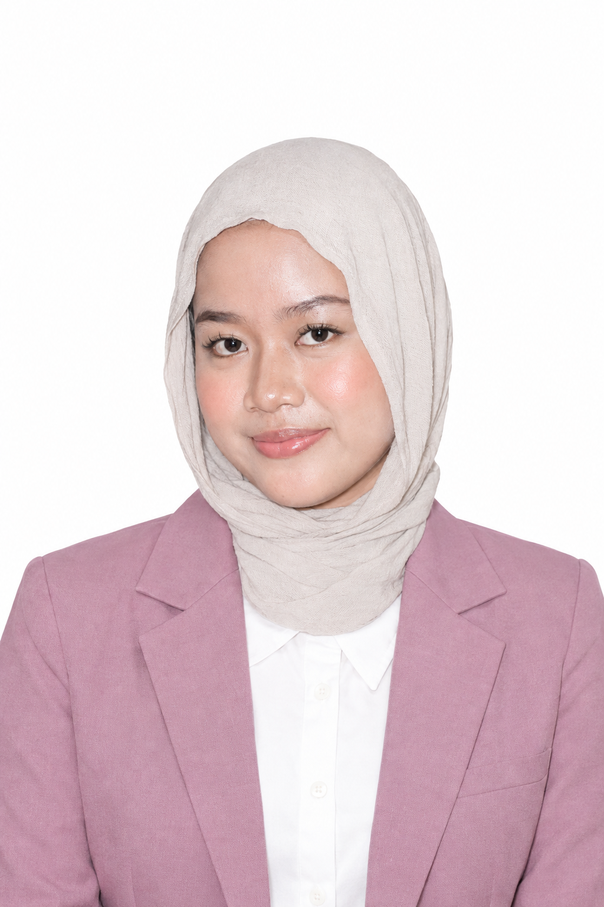

Technical Skills
- Python
- Java
- SQL
- Machine Learning
- Data Analysis
Informatics Student
Business Analyst Intern | Software Developer | Internet of Things | Data Analyst
Bogor, Jawa Barat, Indonesia
Creating practical technology solutions through analysis, software development, data exploration, and continuous learning.

Tentang Saya
Saya adalah mahasiswa Teknik Informatika di Jakarta Global University dengan ketertarikan pada Software Development, Data Analysis, Business Analysis, dan Internet of Things.
Melalui proyek seperti Scraping APK Grab, Peer-to-Peer Distributed Hash Table, dan Manajemen Kolaborasi Scrum, Membuat Chat-bot AI saya terus mengembangkan kemampuan analisis, problem-solving, komunikasi, dan kerja tim.
Keahlian
Pengalaman
Current Role
Organisasi & Dokumentasi
2024 — Present
Berpartisipasi dalam aktivitas UKM Multimedia dan mengembangkan komunikasi, kerja sama, serta keterlibatan aktif dalam organisasi kampus.
Dokumentasi: keterlibatan aktivitas dan kolaborasi tim UKM Multimedia.
2026
Melakukan dokumentasi foto dan video, pengarsipan materi publikasi, serta koordinasi kebutuhan dokumentasi selama kegiatan berlangsung.
Dokumentasi: foto, video, dan arsip publikasi kegiatan organisasi mahasiswa.
Proyek
Data Scraping
Proyek scraping untuk mengumpulkan dan mengolah data aplikasi Grab sebagai bahan analisis.
Lihat di GitHub ↗Java
Aplikasi Distributed Hash Table untuk memahami konsep jaringan peer-to-peer.
Lihat di GitHub ↗Scrum
Proyek manajemen kolaborasi berbasis Scrum untuk mendukung pengelolaan tugas dan kerja tim.
Lihat di GitHub ↗Achievement
Tersedia untuk Diskusi
Terbuka untuk kolaborasi, peluang magang, diskusi teknologi, atau proyek yang membutuhkan analisis dan pengembangan solusi.